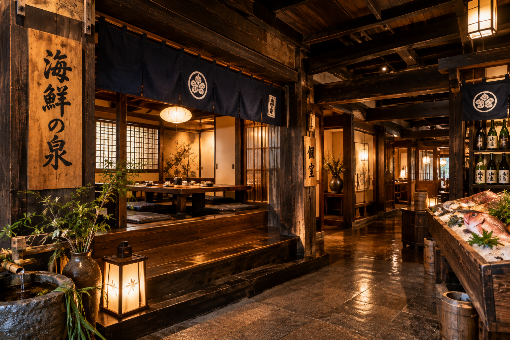

山形市内表｜歴史感じる趣豊かな空間と至高の海鮮料理
「海鮮の泉」は、歴史を感じさせる江戸時代の蔵屋敷を活用した蔵座敷が自慢の店です。
厳選された新鮮な魚介類と地元山形の豊かな地酒を、情緒あふれる和の空間でご堪能いただけます。人数に応じた完全個室（2名～30名様以上まで）も完備しており、特別な日のご会食から各種ご宴会まで幅広くご利用いただけます。

「生本まぐろ中落ち丼」をはじめ、贅沢な海鮮料理をゆったりと楽しむ贅沢な昼食に。
2名〜30名様以上の完全個室を完備。周りを気にせずご家族や大切なお仲間とのひとときを過ごせます。
選りすぐりの鮮魚と山形の豊かな地酒を取り揃え、お酒と料理をじっくり味わいたい方におすすめです。
| 店名 | 海鮮の泉（かいせんのいずみ） |
|---|---|
| 住所 | 〒990-0877 山形県山形市大字内表71（内表71-1） |
| 電話番号 | 023-674-9900 / 090-1939-0121 |
| ジャンル | 居酒屋、食堂、海鮮料理 |
| 席・空間 | 江戸時代の蔵屋敷を活用した蔵座敷／完全個室あり（2～30人、30人以上対応） |
| ご利用可能決済 | ベニpay対応（※その他各種カード・電子マネー等は直接ご確認ください） |